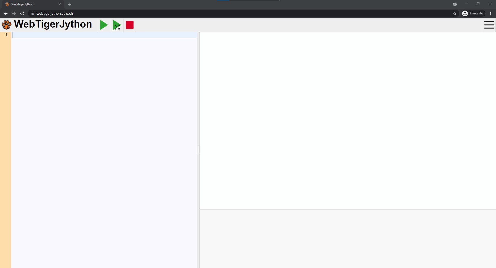

Einrichtung und Programmstart
1. Mit TigerJython programmieren
TigerJython ist eine einfache Variante der Programmiersprache Python, mit der du
verschiedene Sachen programmieren kannst. Du kannst dabei eine kleine Schildkröte - die
Turtle - bewegen und Bilder, Formen und Texte zeichnen lassen. Um mit TigerJython zu
programmieren, kannst du dir entweder ein spezielles Programm herunterladen und installieren
oder du arbeitest mit dem Browser.
Hier hast du die Möglichkeit dir das Programm herunterzuladen: Programm download.
Weil es jedoch schneller und einfacher geht, werden wir im weiteren Verlauf dieses Tutorials die Web-Version von TigerJython im Browser verwenden. Wie du diese startest, wird dir im nächsten Schritt erklärt.
2. WebTigerJython starten
Öffne zunächst einen Browser deiner Wahl, z.B.:
 Google Chrome
Google Chrome Firefox
Firefox- Microsoft Edge
Jetzt sagen wir dem Browser, dass wir die Scratch-Seite ansehen möchten. Gib dafür in die
Adresszeile des Browsers folgenden
Text ein und bestätige die Eingabe abschließend mit der Enter-Taste.
https://webtigerjython.ethz.ch/
Alternativ kannst du einfach den folgenden Link anklicken: WebTigerJython öffnen.
Du solltest nun in deinem Browser ein Bild ähnlich dem Folgenden sehen:
